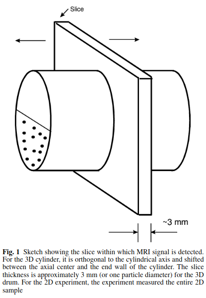
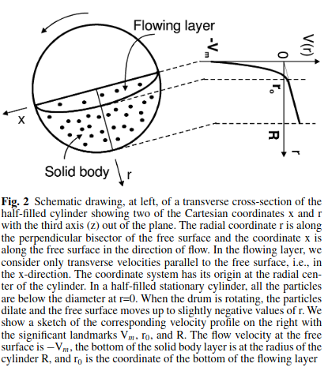

Granular flow is a phenomenon found in various natural and industrial contexts, ranging from the movement of grains in hoppers to large-scale avalanches. Despite its prevalence, understanding and controlling granular flow presents significant challenges due to the complex behaviors exhibited by granular materials, which can behave like solids, liquids, or gasses depending on the conditions. ABQMR was at the forefront of using advanced techniques like nuclear magnetic resonance (NMR) to unravel the intricacies of granular flow dynamics.
Our pioneering work began with the innovative use of plant seeds as analogs for studying granular materials. The oil content within these seeds offers a strong NMR signal, facilitating the observation and analysis of solid-type flow behaviors. This novel approach allowed us to visualize and measure various properties of granular flows non-invasively.
One of our key research areas involved examining granular flow within rotating cylinders. This configuration served as a simplified model that mimicked the conditions found in many practical applications, such as tumbling mixers and rotating kilns. In our experiments, we partially filled horizontal cylinders with granular materials and rotated them to study how particles interact and move. By using NMR, we can capture detailed velocity and density profiles within the granular bed, providing insights into the underlying mechanics.
In our experiments with rotating cylinders, one area of focus was on understanding the effects of end wall friction. The friction between the particles and the end walls can significantly alter the flow dynamics. For instance, in long cylinders, the velocity near the end walls is reduced compared to the middle due to frictional effects, while in shorter cylinders, the end wall friction can accelerate the flow near the surface. These findings are crucial for designing equipment where uniform flow is desired, such as in industrial mixers.
Our studies extend beyond homogeneous systems. We have also investigated the behavior of mixed granular systems, where particles of different sizes or densities interact. This work is particularly relevant for industries that handle mixtures of materials, such as pharmaceuticals and food processing. By analyzing how different particles segregate or blend during flow, we can develop strategies to optimize mixing processes and ensure product uniformity.
The versatility of NMR has allowed us to explore granular flows in various other configurations and conditions. For example, we have studied flows in inclined planes, where granular materials are subjected to gravity-driven motion, and in vibrating containers, where external vibrations influence particle interactions. These studies contribute to a broader understanding of granular flow phenomena and help develop more effective solutions for real-world applications.
One of our notable contributions is pairing experimental data with theoretical insights to create models that can predict the flow characteristics under different conditions. These models are valuable for simulating granular flows in various industrial processes, aiding in the design and optimization of equipment and systems.
Our work has implications beyond academic research. The insights gained from our studies have been applied to solve practical problems in various industries. For example, in the field of pharmaceuticals, understanding granular flow helps in designing better mixing and compaction processes, leading to more consistent and effective products. In construction, our findings assist in optimizing the handling and transport of granular materials like cement and sand, improving efficiency and reducing costs.
The work on "Granular Flow" at ABQMR represents some of the first non-invasive, three-dimensional imaging to understand and control the behavior of granular materials. By exploring the fundamental mechanisms governing granular flow and developing practical applications, our research has contributed to advancements in multiple industries and enhancing the knowledge base of this complex field.


References:
Figures 1&2: J. E. Maneval, K.M. Hill, B.E. Smith, A. Caprihan, and E. Fukushima. "Effects of end wall friction in rotating cylinder granular flow experiments," Granular Matter 2005; 7: 199-202.
J. E. Maneval, K.M. Hill, B.E. Smith, A. Caprihan, and E. Fukushima. "Effects of end wall friction in rotating cylinder granular flow experiments," Granular Matter 2005; 7: 199-202.
E. Fukushima, "Granular flow studies by NMR: A chronology," Adv. Complex Systems, 2001; 4: 1-5.
A. Caprihan and J. D. Seymour, "Correlation Time and Diffusion Coefficient Imaging: Application to a Granular Flow System." J. Magn. Reson., 2000; 144: 96-107.
J. D. Seymour, A. Caprihan, S. A. Altobelli, and E. Fukushima, "Pulsed Gradient Spin Echo Nuclear Magnetic Resonance Imaging of Diffusion in Granular Flow," Phys. Rev. Lett., 2000; 84: 266-269.
K. Yamane, M. Nakagawa, S. A. Altobelli, T. Tanaka, and Y. Tsuji, "Steady Particulate Flows in a Horizontal Rotating Cylinder," Physics of Fluids, 1998; 10: 1419-1427.
K. M. Hill, A. Caprihan, and J. Kakalios, "Axial segregation of granular media rotated in a drum mixer: Pattern evolution," Phys. Rev. E, 1997; 56: 4386-4393.
M. Nakagawa, S. A. Altobelli, A. Caprihan, and E. Fukushima, "An MRI study: Axial migration of radially segregated core of granular mixture in a horizontal rotating cylinder," Chemical Engineering Science, 1997; 52: 4423-4428.
A. Caprihan, E. Fukushima, A. D. Rosato, and M. Kos, "Magnetic Resonance Imaging of Vibrating Granular Beds by Spatial Imaging," Rev. Sci. Instrum., 1997; 68: 4217-4220.
A. Feinauer, S. A. Altobelli, and E. Fukushima, "NMR measurements of 3-D flow profiles in a coarse bed of randomly packed spheres," Magn. Reson. Imaging, 1997; 15: 479-487.
K. M. Hill, A. Caprihan, and J. Kakalios, "Bulk Segregation in Rotated Granular Materials Measured by Magnetic Resonance Imaging," Phys. Rev. Letters, 1997; 78: 50-53.
E.-K. Jeong, S. A. Altobelli, and E. Fukushima, "NMR Imaging Studies of Stratified Flows in a Horizontal Rotating Cylinder," Physics of Fluids, 1994; 6: 2901-2906.
M. Nakagawa, "Axial segregation of granular flows in a horizontal rotating cylinder," Chem. Engng. Sci., 1994; 49: 2540-2544.
M. Nakagawa, S. A. Altobelli, A. Caprihan, E. Fukushima, and E.-K. Jeong, "Non-invasive Measurements of Granular Flows by Magnetic Resonance Imaging," Experiments in Fluids, 1993; 16: 54-60.
L. Sanfratello, J. Zhang, S. C. Cartee, and E. Fukushima, "Exponential Distribution of Force Chain Lengths: A Useful Statistic that Characterizes Granular Assemblies," Gran. Mat. 13(5), 511-516 (2011).
L. Sanfratello and E. Fukushima, "Experimental Studies of Density Segregation in the 3D Rotating Cylinder and the Absence of Banding," Granular Matter,11(2) (2009) 73-78.
L. Sanfratello, E. Fukushima, and R. P. Behringer, "Using MR Elastography to Image the 3D Force Chain Structure of a Quasi-Static Granular Assembly," Granular Matter,11(1) (2009) 1-6.
L. Sanfratello, A. Caprihan, and E. Fukushima, "Velocity depth profile of granular matter in a horizontal rotating drum," Gran. Mat. 9(1-2), 1-6 (2007).